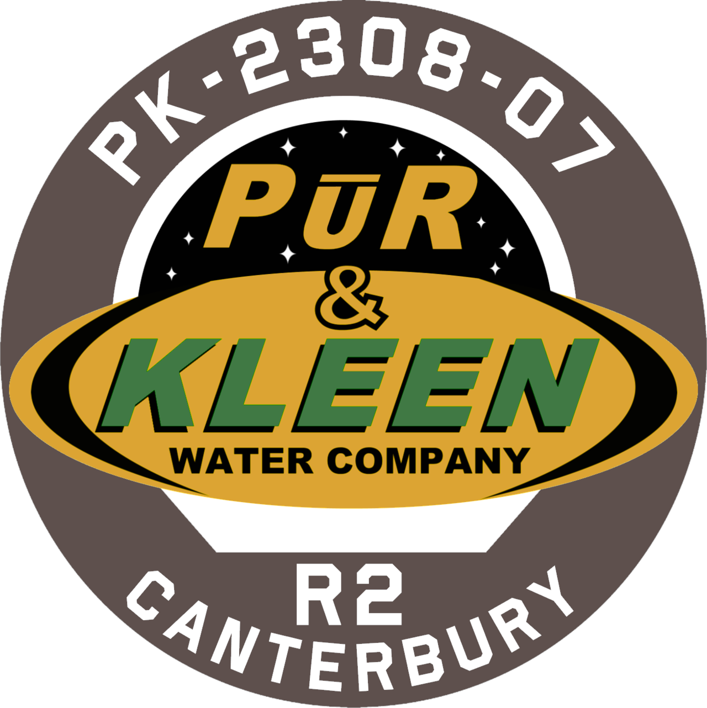

A política da OPA se baseia na idéia de liberdade política e de direitos, a Terra (ONU) e Marte (MCR) consideram a OPA como uma "organização terrorista" que tenta gerar confusão no comércio e na administração do Sistema Solar. Existem muitos pregadores Belters que unem pessoas em praças públicas em Ceres para discursar idéias de liberdade e de respeito que eles devem ter pelos terráqueos e marcianos.
Imagem de uma praça pública na estação Ceres, onde ocorre pregações de liberdade dos Belter.
A facção da OPA de Anderson Dawes era uma facção da Aliança dos Planetas Externos, que operava principalmente em Ceres . Os seguidores de Anderson Dawes perseguem seus objetivos devido ao seu carisma. Essa facção trabalhou intensamente com o líder da OPA de Tycho Station , Fred Johnson, que foi trazido para a OPA por Anderson Dawes. Quando as Nações Unidas se retiraram de Ceres após a destruição de Canterbury, essa facção assumiu o controle da Estação.
Além dessa facção outras também se formaram para garantir seus objetivos. Entre as características físicas dos Belters temos a presença de tatuagens que retratam simbolos da organização, altura elevada por causa das consequências de viver em baixa gravidade e idioma, sendo as principais o inglês e um novo idioma chamado Belter Creole.
Imagem de comércios na estação Ceres, muitos lugares podem ser usados para a expressão política dos Belters.
Imagem retratando uma pregação política de um Belter chamado Gaunt Belter.
Gaunt Belter, o homem que aparece na imagem acima fazendo gestos de resistência é um ativista vocal frequentemente observado incitando distúrbios na Medina (navio geracional desenvolvido na estação Tycho). Dependendo do observador, ele pode ser um herói ou um vilão odioso.